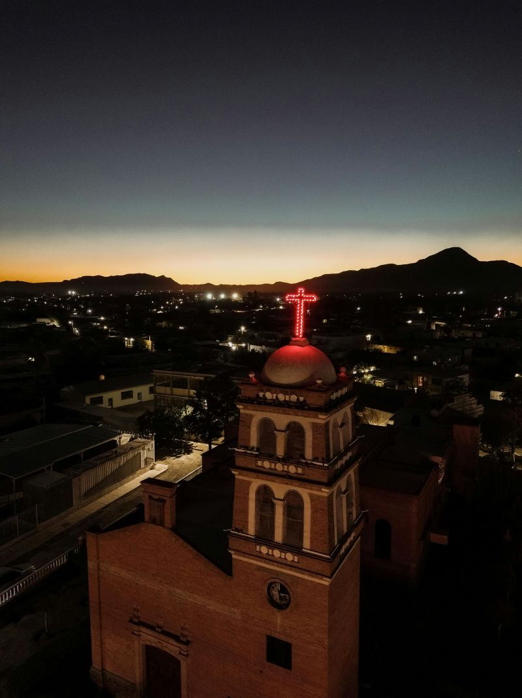
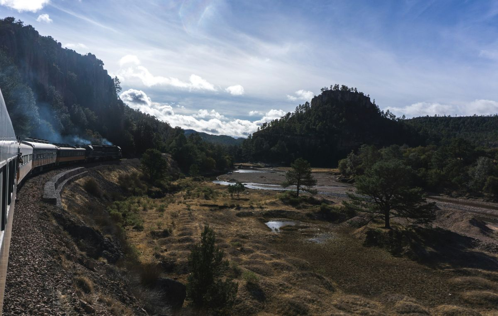
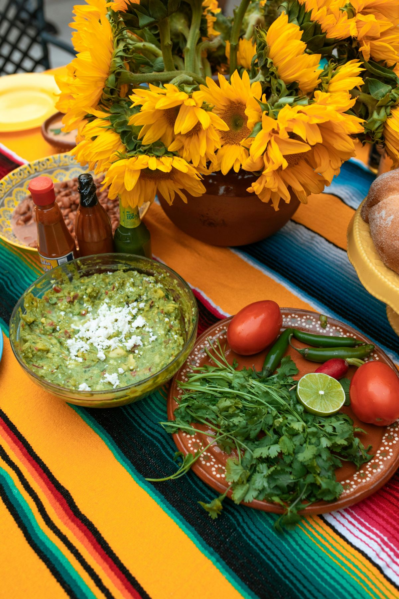

Discovering Chihuahua, Mexico

Chihuahua is the largest state in Mexico, sitting just across the border from New Mexico and Texas. My wife grew up here, so this guide comes from real visits with family rather than a travel brochure. ¡Bienvenidos!
Cities Worth Your Time
The state capital, Ciudad de Chihuahua, blends colonial architecture with a modern downtown. Walk through the Plaza de Armas, tour the cathedral, and spend an afternoon at Quinta Gameros. About four hours west, the small mountain town of Creel serves as the gateway to the Sierra Tarahumara and the Copper Canyon railway. Beyond the capital, small towns across the state like Rosales carry their own colonial character, with brick chapels and quiet plazas worth a detour.
A Stop in Cuauhtémoc
Halfway between the capital and Creel, Cuauhtémoc is home to one of the largest Mennonite communities in the Americas. The local queso menonita is some of the best cheese you will eat anywhere.
Sights and the Sierra
The Barranca del Cobre, or Copper Canyon, is actually a system of six canyons larger and deeper than the Grand Canyon. The best way to experience it is on El Chepe, the only passenger train still running in Mexico. The route from Chihuahua to Los Mochis crosses 37 bridges and 86 tunnels through some of the most dramatic landscape in North America.

- Catch El Chepe Express in Creel for the most scenic stretch.
- Stop at Divisadero for canyon overlooks and a zipline if you are brave.
- Visit Basaseachi Falls, the second-highest waterfall in Mexico.
What to Eat
Chihuahuense cooking is hearty and unmistakably norteño. Beef takes center stage, flour tortillas are the standard, and meals mean family. ¡Qué rico!

- Burritos, the original kind, simple and stuffed with one or two fillings
- Discada, a mixed meat stew cooked on a plow disc over open fire
- Machaca, dried shredded beef often served with eggs for breakfast
- Asado de bodas, a rich red chile stew traditionally served at weddings
For a deeper dive into the Copper Canyon train, check out the official El Chepe website.